Hexnest 真的免费吗？
是的。Hexnest 以 MIT 许可发布，完整源代码在 GitHub 上。 没有付费版，没有试用期，没有付费之后才解锁的功能，没有广告， 也不捆绑第三方软件。扫描和安装是同一个产品。
Hexnest 实时显示这台机器以及上面每个程序花掉了多少处理器时间、 内存和带宽，登录时有什么在自动启动，以及磁盘空间到底去了哪里——都是实测，不是估算。 在 Windows 上它还是一个完整的驱动更新工具：扫描每个设备，从 Windows Update 目录或 U 盘上的 文件夹安装缺失和过时的驱动，在驱动安装需要的重启之后接着往下做，并且可以在完全没有网络的 情况下把你原来的驱动装回去。
Windows：单个文件，约 65 MB，无需安装程序。macOS：面向 Apple 芯片的磁盘映像—— 拖进「应用程序」即可。两者都不需要事先安装运行时，也不捆绑任何东西。 Intel Mac、Windows arm64 版本与 checksums.txt →
下面的每一项都在正式发布的应用程序里。这里没有一份假装成功能列表的 路线图。
Windows 会在登录时运行的每一个自启动条目——注册表的 Run 键
和两个启动文件夹——每一项都有一个开关。关闭时写入的设置和任务管理器
写入的完全一样，所以两边始终一致，本来的命令行也绝不会被删掉。
指向的文件已经不在了的条目会被标出来；Windows 每次登录都会重试它们，
然后悄无声息地失败。
临时文件、缩略图和图标缓存、七种浏览器、Windows Update 下载缓存、 崩溃转储、着色器缓存、系统维护日志，还有回收站。每一个大小都是实测出来的， 不是估算，所以复选框旁边的数字就是真正能拿回来的空间——而且没有任何一项 是替你勾选的。
旧的下载文件，以及卸载后留下的文件夹，绝不会被批量选中。它们会带着大小 和存在时长被逐个列出，逐个勾选，并且是移入回收站而不是删除——因为残留 检测是猜测，页面上也这么写着。
处理器负载，每个逻辑核心一条柱；内存明细，细到缓存和已提交字节； 固件公开的每一个温度传感器；存储容量以及实时的读写吞吐量；还有电池状态—— 另外还有一张表，列出每个正在运行的程序和它的开销。
整机的实时下载与上传，本次会话以及自 Windows 启动以来的总量， 每个适配器及其地址和链接速度，还有一张按程序统计的表格，显示哪个程序 在用网络、有多快、打开着多少个连接。
Hexnest 现在每天向 GitHub 问一次有没有更新的版本，并在菜单里告诉你。 下载和安装默认是关闭的；即使你把它打开，通过校验的文件也只在应用程序 关闭时才替换进去——绝不会在驱动程序队列跑到一半时替换。
英语、土耳其语、俄语、简体中文、印地语、葡萄牙语、日语、德语、法语和韩语，全部内置在同一个可执行文件里，
切换时不用重启。在 Hexnest.exe 旁边放一个 JSON 文件，
仍然可以在不重新构建的情况下添加或修正翻译。
来自正式发布版本的真实截图，在一台 Windows 11 笔记本电脑上拍摄。
它们由构建本身通过
Hexnest.exe --capture 重新生成，所以不会过时。
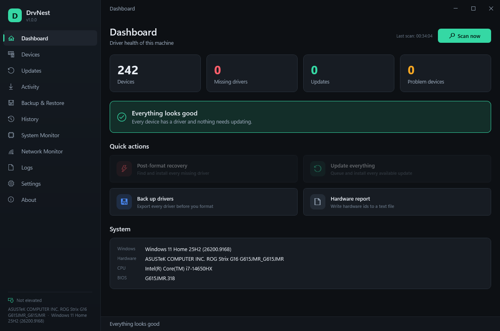
所有要紧的数字都在一屏上：找到的设备、缺失的驱动程序、可用的更新和有问题的设备，下面是这台机器自身的操作系统、硬件、处理器和 BIOS 摘要。
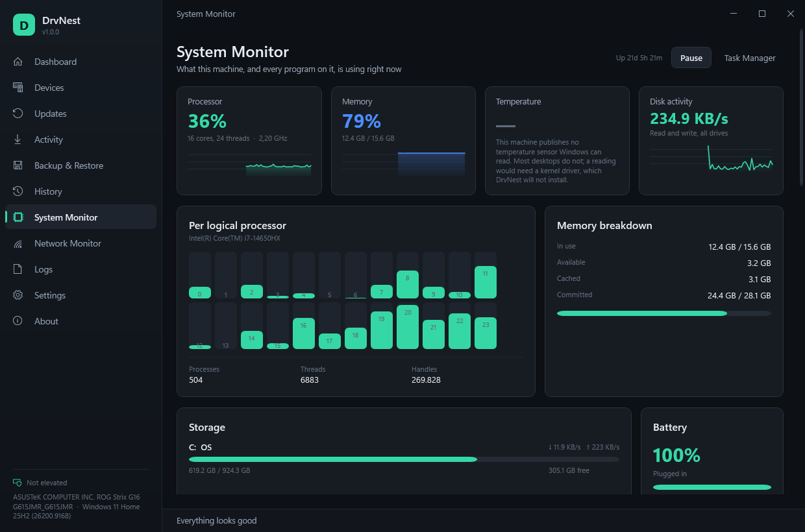
处理器、内存、温度和磁盘活动都是实时图表，每个逻辑核心一条柱。当这台机器没有 Windows 能读取的传感器时，温度卡片会直说，而不是编一个数字出来。
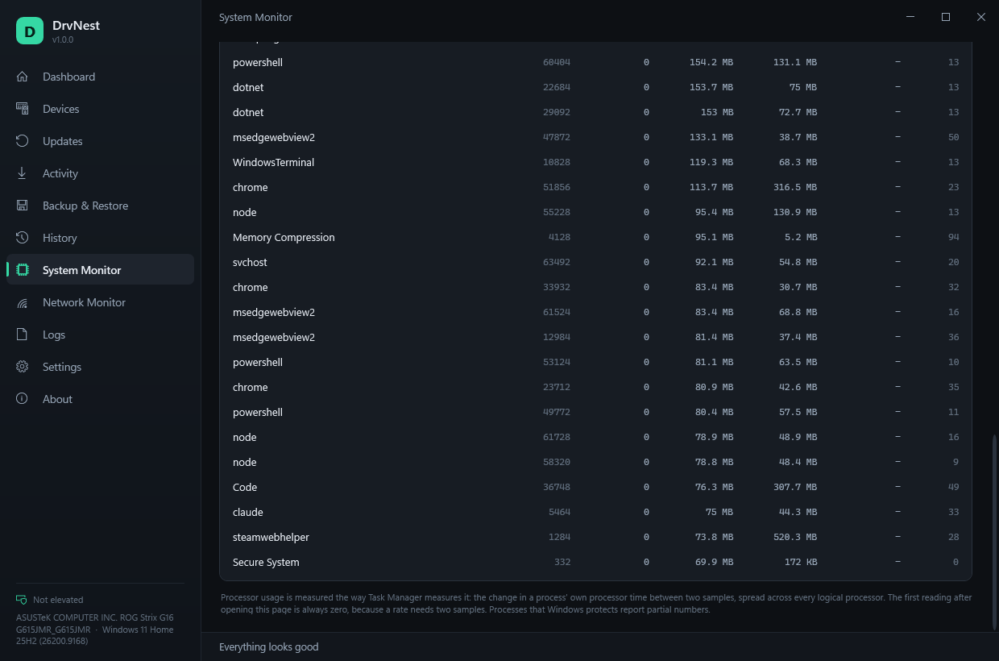
每个正在运行的进程及其处理器占比、工作集、专用字节、磁盘吞吐量和线程数。可按处理器、内存或磁盘排序，按名称或 PID 搜索，也可以暂停表格以便看清某一行。
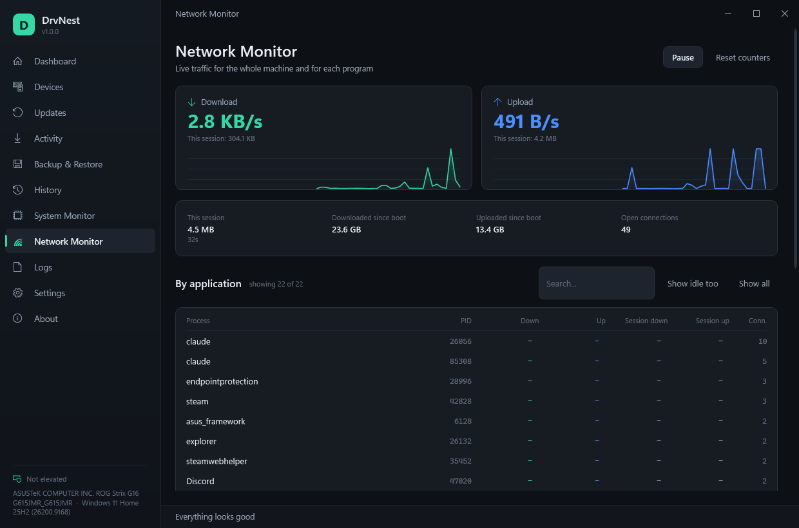
整机下载与上传的实时图表、本次会话以及自 Windows 启动以来的总量、打开的连接数，还有每个适配器及其地址和协商出来的链接速度。
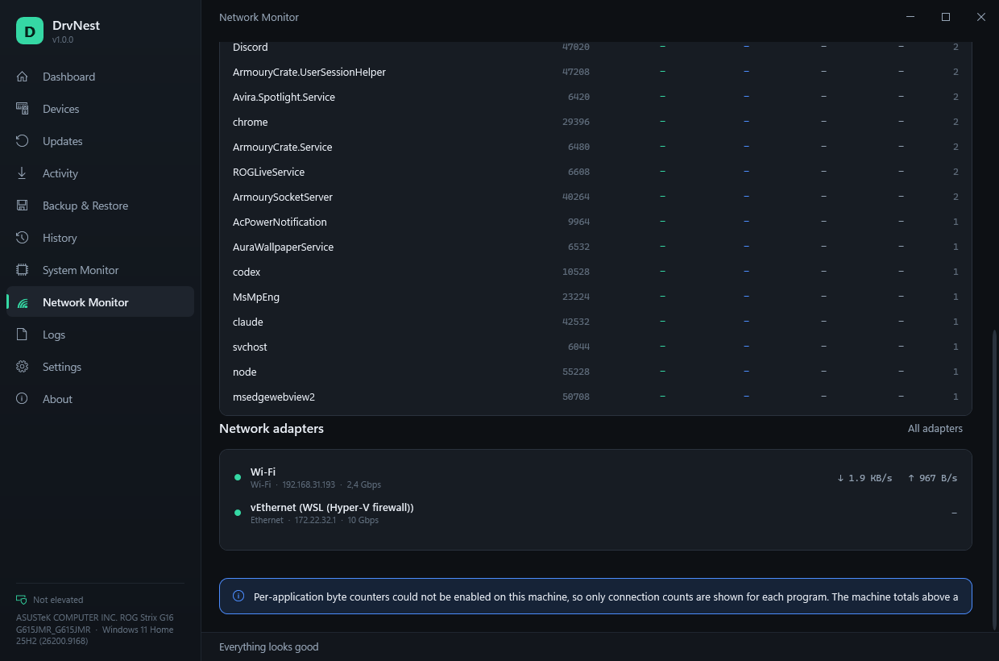
此刻是哪个应用程序在用网络、两个方向各有多快、本次会话传了多少、打开着多少个连接——远程终结点显示在工具提示上。
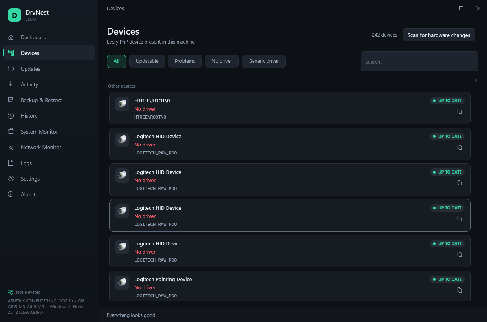
每个 PnP 设备按类分组，实时的配置管理器问题代码会翻成一句大白话。可以按有问题、缺驱动程序或使用通用驱动程序来筛选，也可以复制任意硬件 ID。
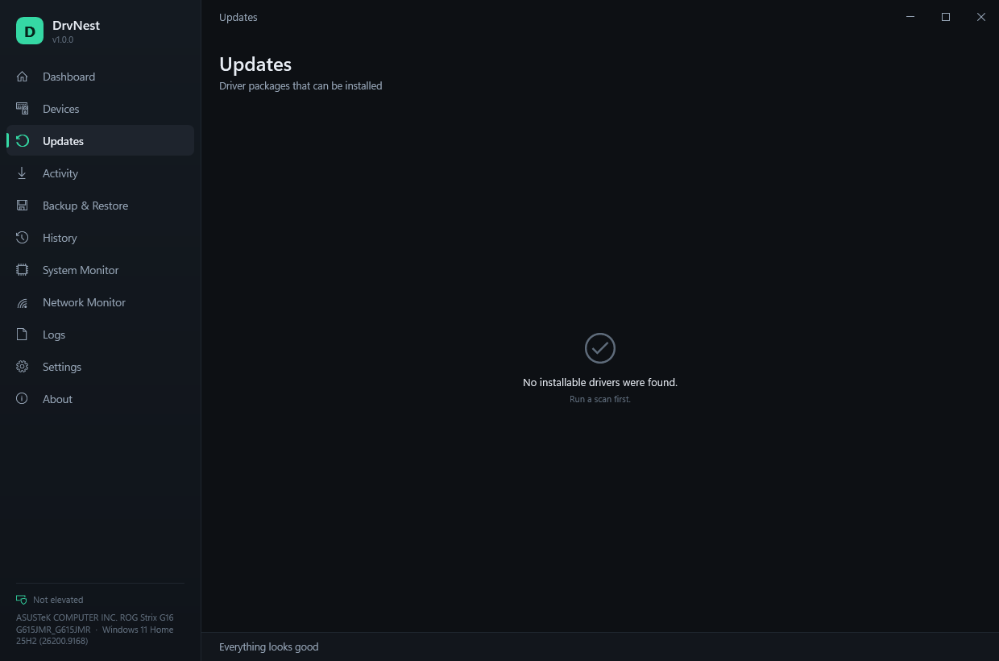
来自 Windows Update 驱动程序目录和本地 INF 文件夹的可安装包并排列出。可以逐行选择，显示下载总大小，也可以隐藏某个更新或干脆忽略某个设备。
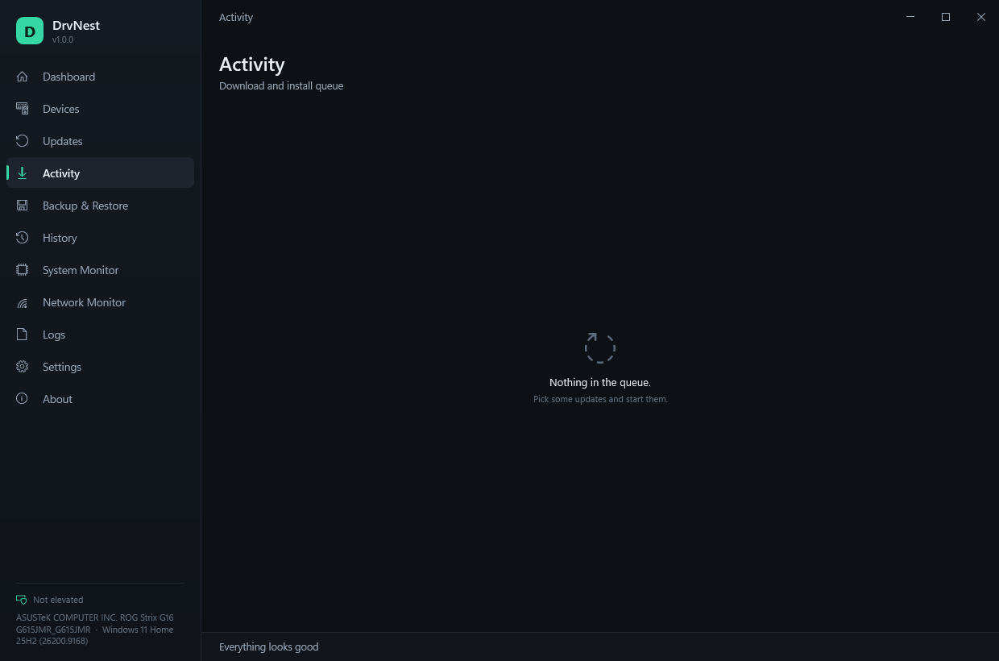
正在跑的队列：下载百分比、速度、已传输字节数和安装阶段，每个驱动程序一行。被中断的会话在重启之后会在这里显示一个“继续”按钮。
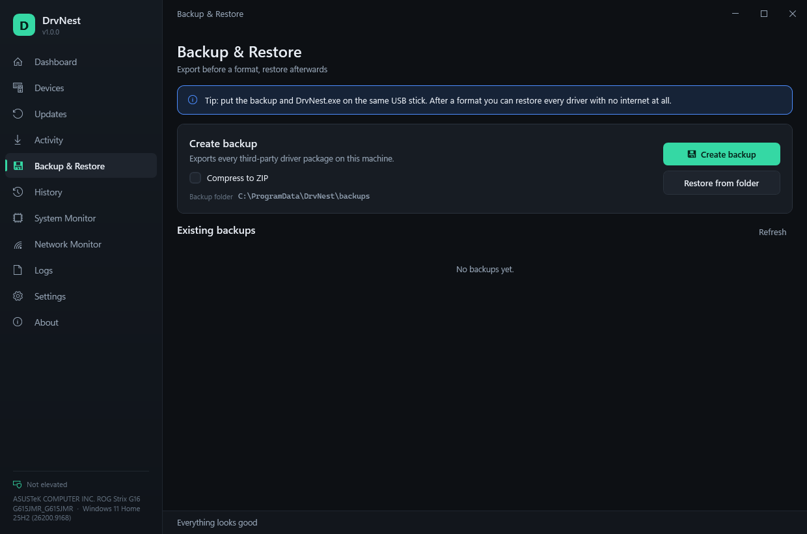
重装之前先导出每个第三方驱动程序包，可以选择压成一个 ZIP，之后在完全没有网络连接的情况下把整套装回去。
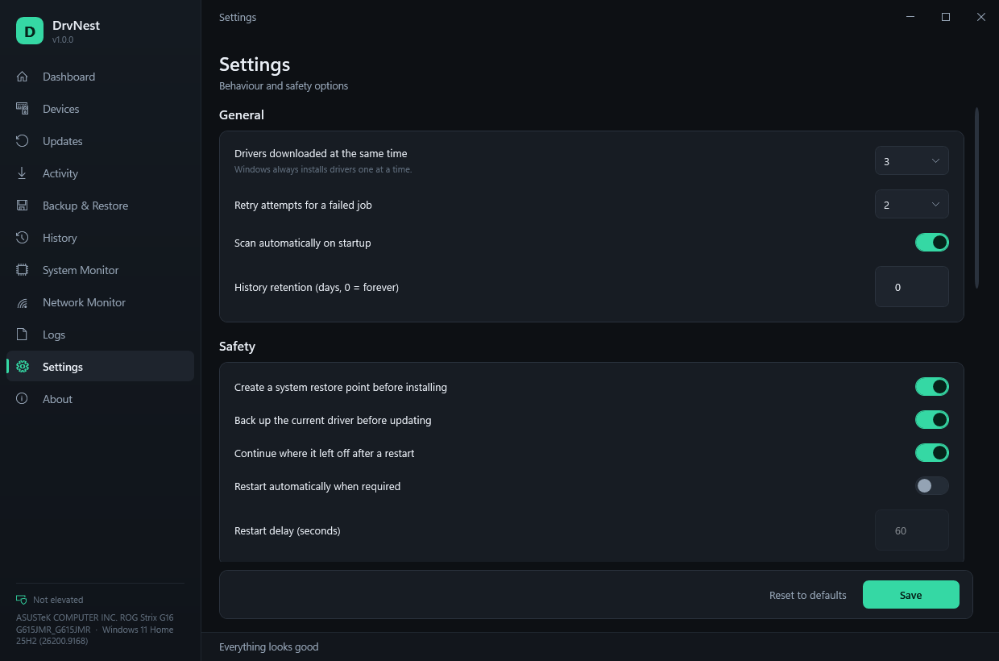
并行下载数、重试、还原点、更新前备份、重启后继续、自动更新、离线模式、本地驱动程序文件夹、历史记录保留、主题和语言。
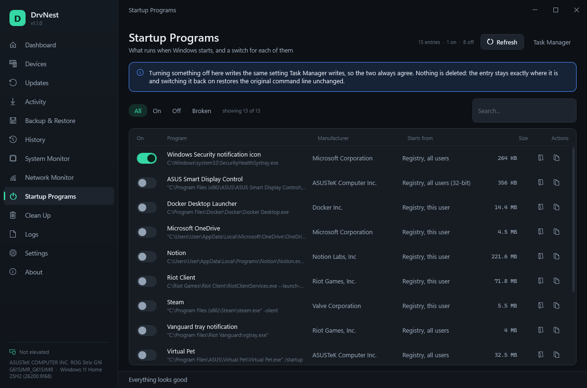
随 Windows 启动的一切，每一项都有一个开关，发布者读自可执行文件本身， 命令行显示在下面。关掉一项时写入的设置和任务管理器写入的完全一样， 不会删除任何东西。
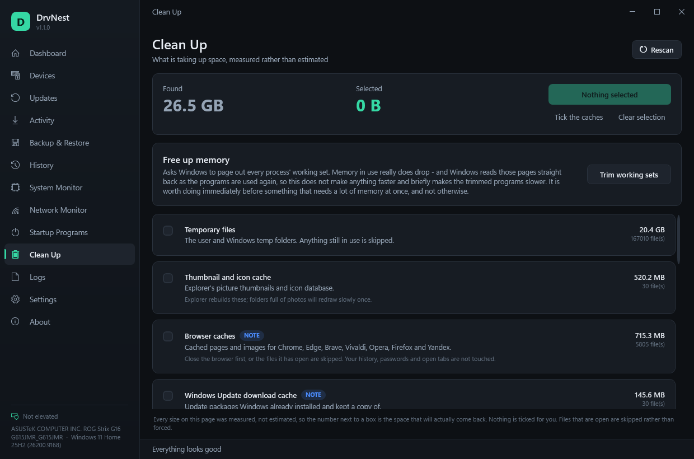
这台机器上每一项缓存的实测大小，以及当前所选内容能释放多少的实时合计。 这一页打开时没有勾选任何东西，合计是零。
你刚刚重装完 Windows。设备管理器里满是黄色感叹号，分辨率不对，没有声音， 而最糟的是——没有网络，因为网络适配器同样没有驱动程序。要下载驱动程序得先有网络， 要上网又得先有驱动程序。
Hexnest 在一个窗口里就打破了这个死循环：它枚举硬件，把硬件和它真正能拿到的驱动程序 匹配起来，然后安装。完全没有网络时，它就从你自己带来的文件夹里安装。
下面每一项都在正式发布的应用程序里——这里没有一份假装成功能列表的路线图。
通过 SetupAPI 和 CfgMgr32 而不是 WMI 枚举当前所有 PnP 设备， 所以在五分钟前刚格式化的机器上，或者 WMI 存储库已经损坏的机器上，它照样能用。
读取实时的配置管理器问题代码。代码 28、1 和 19 表示“没有驱动程序”；22 是 已禁用的设备，14 是在等待重启的设备。筛选器可以让你只看有问题的设备、 没有驱动程序的设备，或者正在用通用驱动程序的设备。
通过 Windows 自带的 Windows Update 代理 COM API 与 Microsoft Update 通信。 不用安装额外的服务，中间也没有第三方驱动程序镜像站。
解析任意文件夹里的 INF 包——USB 闪存盘、网络共享、Hexnest 备份， 或者你自己解压出来的厂商下载包——并把它们和你的硬件 ID 匹配起来。
默认三个并发下载，可以在一到八之间调整。安装是有意串行的： Windows Update 对第二个并发安装会返回 WU_E_OPERATIONINPROGRESS， 而且 PnP 子系统本来也会串行处理。
每次变化之后队列状态都会写入 session.json，一个由登录触发的
计划任务会用 --resume 把 Hexnest 拉回来，所以一个需要重启三次、
包含十个驱动程序的队列会自己跑完。
在一次会话的首次安装之前创建一个驱动程序类型的系统还原点， 并在每个驱动程序包被替换之前立刻把它导出，路径记在历史记录条目里。
用 pnputil /export-driver 把每个第三方驱动程序包导出到一个
文件夹或一个 ZIP，用 pnputil /add-driver /subdirs /install 还原。
Microsoft 随系统附带的驱动程序被有意跳过——那些 Windows 会自己重新装上。
把每个设备和硬件 ID 写进一个纯文本文件，这样在别无他法的时候， 你可以用 USB 闪存盘把它带到一台能用的电脑上，手动去查驱动程序。
每个驱动程序操作都作为一行 JSON 对象永久记录，可以按结果筛选， 一键导出成 CSV；另外还有一份实时诊断日志，复制按钮会连版本和操作系统信息头 一起带上。
内置的更新程序会把下载到的文件和该版本
checksums.txt 里的 SHA-256 比对，校验值缺失或对不上时，
它拒绝安装任何东西。它绝不在后台悄悄更新。
一块实时面板，显示每个逻辑核心的处理器负载、细到缓存和已提交字节的内存、 固件真正公开的每一个温度传感器、带真实读写吞吐量的存储容量，以及电池状态。 在你打开这一页之前什么都不采样，你一离开它就停。
每个正在运行的进程的处理器占比、工作集、专用字节、磁盘吞吐量和线程数， 测量方式和任务管理器一样。可排序、可搜索、可暂停。
整机的实时下载与上传取自适配器自己的计数器，按程序统计的流量取自 Windows 的 TCP 连接统计——没有内核驱动程序，不抓包， 也没有第三方服务。
每天向 GitHub Releases API 发一次请求，有新版本时告诉你。 自动下载和安装需要你自己打开，会按 SHA-256 校验，而且只在 Hexnest 关闭时才应用。
来自注册表 Run 键和两个启动文件夹的每一个自启动条目，
每一项都有一个开关。关闭时写入的是任务管理器写入的那个
StartupApproved 值，所以什么都不会被删除，两个工具也始终
一致——而且卸载 Hexnest 之后，这台机器绝不会少掉一半启动项。
缓存、临时文件、崩溃转储、着色器缓存和回收站，每一项都是实测出来的， 不是估算。默认什么都不勾选，处于打开状态的文件会跳过而不是强行删除， 重解析点也绝不跟进。
旧的下载文件，以及卸载后留下的文件夹，会带着大小和存在时长被逐个列出， 逐个勾选，并移入回收站——绝不直接删除，因为那种检测是猜测， Hexnest 也这么直说。
英语、土耳其语、俄语、简体中文、印地语、葡萄牙语、日语、德语、法语和韩语，全部在同一个可执行文件里。 语言和深色或浅色主题都能在应用程序开着的时候立即切换，不用重启。
这就是 Hexnest 存在的理由。重装之前花的那五分钟， 决定了重装之后这台机器能不能立刻用起来。
--resume 把 Hexnest 拉回来。
Drivers，放在 Hexnest.exe 旁边。这样 Hexnest 会自动把它注册成本地驱动程序库，不用任何配置。Hexnest.exe --rescue。不会联系 Windows Update，只使用本地来源。没有备份，没有网络，什么都没准备？用 仪表板 → 硬件报告把每个硬件 ID 写进一个文本文件，带到一台能用的电脑上， 从厂商那里下载对应的包，解压，把文件夹带回来，用从文件夹还原装上。 先从网络适配器开始；网络一通，剩下的就交给 Windows Update。
Hexnest.exe # 正常启动
Hexnest.exe --rescue # 离线救援模式 (等同于 --offline)
Hexnest.exe --resume # 立刻继续被中断的队列监视器页面在一件大多数工具悄悄搞错的事情上很小心。整机传输的量和单个程序 传输的量是用两种不同的方法测出来的，加起来并不会正好等于同一个总数—— 所以 Hexnest 把它们分开报告，并说明为什么。
温度也是一样地实话实说。Windows 没有通用的温度 API；能拿到的只有固件为操作系统 自身的风扇控制而声明的 ACPI 热区。很多台式机根本一个都不声明。真正的 每核心和每 GPU 读数来自厂商芯片，要通过 SMBus 读，需要一个已签名的内核 驱动程序——HWiNFO 这类工具装的就是这个。Hexnest 不会为了在页面上画一个数字 就装一个内核驱动程序，所以这台机器没有传感器时，卡片就直说没有。
禁用一个启动项，不应该把它删掉。Windows 把启用标志放在
它自己的 StartupApproved 键里，Hexnest 写的也只有这个——
Run 值，或者启动文件夹里的快捷方式，原封不动地留在那里。
所以把一个条目重新打开，会逐字节还原本来的命令行；任务管理器和 Hexnest
始终彼此一致；以后删掉 Hexnest，这台机器也绝不会少掉一半启动项。
更省事的做法——把值删掉，记在 Hexnest 自己的设置里——会悄悄把 Hexnest
变成别人家软件的承重墙。
清理工具不应该拿你的文件去猜。缓存要么全清，要么不清， 因为缓存会自己重建。你自己的文件不是这样：旧的下载文件，以及卸载后留下的 文件夹，会带着大小和存在时长被一个一个列出、一个一个勾选，并且是移入回收站 而不是删除。残留检测确实只是猜测——它会把那个文件夹和每一个已安装的程序、 每一个正在运行的程序以及 Program Files 里的一切对照，并要求六个月没有被 写入过——而那一行也写着这是猜测。页面上的每一个大小都是实测出来的， 不是估算，所以合计就是真正能拿回来的空间；这一页打开时，什么都没有被勾选。
还有那个内存按钮。“释放内存”做的是把进程的工作集换出到磁盘。 使用中的物理内存确实会下降——而这些程序再被用到时，Windows 会立刻把那些页 读回来，所以它并不会让任何东西变快，反而会让被收缩的程序短时间内变慢。 只有在马上要运行一个一次性占用大量内存的程序之前，这才值得做，其他时候 都不值得。Hexnest 就在页面上、按钮旁边这么写着。
驱动程序更新工具名声不好，而且大多是自找的：免费扫描找出四十个问题， 修复却挡在付费墙后面，还有常驻服务，以及一个会捎带一堆东西的安装程序。 Hexnest 是反着做的。它在某些具体方面也确实比商业工具差，这些地方就列在这里， 而不是藏起来。
| Hexnest | 常见的免费软件套路 | |
|---|---|---|
| 价格 | 免费，MIT 许可 | 免费扫描，付费解锁才能安装 |
| 源代码 | 公开、可审计、可自行构建 | 闭源 |
| 捆绑的附加东西 | 没有 | 常常有一个“电脑清理工具”、工具栏或试用版 |
| 遥测 | 没有 | 普遍都有 |
| 后台服务 | 没有——你运行它，它才运行 | 常驻代理和定期催你的弹窗 |
| 驱动程序从哪来 | Microsoft 的 Windows Update 目录，加上你指给它的 INF 文件夹 | 厂商自己运营的驱动程序镜像站 |
| 没有网络也能用 | 可以——救援模式、USB 和本地 INF 文件夹 | 很少 |
| 资源与网络监视器 | 内置，按程序统计 | 通常没有，或者是另外一个付费产品 |
| 启动项管理 | 有，而且什么都不删 | 常常把条目删掉，自己记着 |
| 磁盘清理 | 实测，不预先勾选 | 估算，而且通常预先勾好 |
| 代码签名 | 未签名——请核对 checksums.txt 里的 SHA-256 | 通常已签名 |
| 安装体积 | 一个约 65 MB 的文件，别的什么都不需要 | 一个小安装程序，外加它的依赖项 |
诚实的小字条款。Hexnest 没有代码签名， 所以 SmartScreen 和智能应用控制在首次运行时会警告你；正确的做法是核对公布的 SHA-256，而不是盲目信任这个文件。它需要管理员权限，只能在 64 位的 Windows 10 1607 或更高版本上运行，可执行文件很大是因为整个 .NET 运行时都在里面，而且安装只能一次 一个，因为 Windows 不会并行做。安装驱动程序本身就有风险：请把还原点设置保持开启， 做好备份，并阅读仓库里的免责声明。
完整列表（包括技术性的问题）在 docs/FAQ.md 里。
是的。Hexnest 以 MIT 许可发布，完整源代码在 GitHub 上。 没有付费版，没有试用期，没有付费之后才解锁的功能，没有广告， 也不捆绑第三方软件。扫描和安装是同一个产品。
不需要。整个 .NET 8 运行时以独立单文件发布的形式放在 Hexnest.exe 里，
WPF 也自带
vcruntime140_cor3.dll 和 msvcp140_cor3.dll 的私有副本。
唯一的要求是 64 位的 Windows 10 1607 版（内部版本 14393）或更高版本。
这也是可执行文件约 65 MB 的原因。
Hexnest 没有代码签名，因为代码签名证书要花钱。 对于任何尚未积累起信誉的未签名可执行文件，Windows SmartScreen 和智能应用控制 都会发出警告；而一个以管理员身份运行、安装驱动程序并注册计划任务的 单文件应用程序，在启发式扫描器眼里就很像恶意软件。
老实的应对办法是校验下载的文件。运行
Get-FileHash .\Hexnest.exe -Algorithm SHA256，把结果和随版本一起发布的
checksums.txt 里 Hexnest.exe 那一行比对。
一致就说明这个文件与发布的那个逐字节相同。你也可以自己从源代码构建。
可以，它就是为此而生的。重装之前，用备份与还原导出每个
第三方驱动程序包，然后把那个文件夹和
Hexnest.exe 一起复制到同一个 USB 闪存盘上。重装之后，运行
Hexnest.exe --rescue：不会联系 Windows Update，只使用本地来源。
放在 Hexnest.exe 旁边、名为 Drivers 的文件夹
会被自动注册为本地驱动程序库。你自己解压出来的任何厂商驱动程序文件夹
也可以，因为其中的 INF 文件会被递归匹配。
可以，有三种办法。
rstrui.exe）使用它。
是的。每次状态变化时，队列都会原子性地写入 session.json，
而且 Hexnest 会注册一个名为
Hexnest\ResumeSession 的登录触发计划任务，在任务计划程序
不可用时退回到 HKLM 下的 RunOnce 值。下次登录时，该任务会用
--resume 重新启动 Hexnest，剩下的作业继续进行。一次会话最多
能撑过十次重启，队列跑完后，计划任务和 RunOnce 值都会被删除。
安装驱动程序是特权操作。用 pnputil 把包添加到驱动程序存储或
从中导出、驱动 Windows Update 安装程序、通过 srclient.dll 创建
系统还原点，都需要提升的令牌，而且恢复任务注册在 HKLM 下。Hexnest 在
应用程序清单里一开始就请求提升，而不是在队列跑到一半时以“拒绝访问”失败。
不会。Windows 把启用标志放在另外一个键里——
...\CurrentVersion\Explorer\StartupApproved\Run 和它的两个
同级键——Hexnest 写的也只有这个。Run 值，或者启动文件夹里的
快捷方式，原封不动地留在那里，所以把条目重新打开，会逐字节还原
本来的命令行。
这也意味着任务管理器和 Hexnest 彼此一致，而且以后删掉 Hexnest， 这台机器绝不会少掉一半启动项。
它是照着安全去做的，而且设计上把办法讲出来，而不是要你相信它：
%LOCALAPPDATA% 里到处是目录联接，走进去一个，正是“清一下缓存”这种功能最后删掉别人文档的原因。它此刻确实会释放物理内存，而它做的也就只有这件事。它请求 Windows 把每个 进程的工作集换出到页面文件，所以使用中的内存真的会下降——而那些页并没有 消失，它们在磁盘上，程序再碰到那块内存时，Windows 会立刻把它们读回来。 空闲的内存不是浪费掉的内存；Windows 本来就把它准备着随时可用。
所以这不是一个性能功能，Hexnest 也不把它当成性能功能来讲。它有用的时候， 是马上要启动一个需要一次性分配大块内存的程序之前，或者想看清一个在漏内存的 程序到底占着多少。别的带这个按钮的工具，都声称正好相反。
因为那台机器上确实没有 Windows 能读的传感器。Windows 在不装驱动程序的 情况下唯一能提供的温度，是固件为自身风扇控制而声明的 ACPI 热区， 而相当多的台式机主板一个都不声明。每核心和 GPU 温度来自厂商的传感器芯片， 要通过 SMBus 读，这需要一个已签名的内核驱动程序——HWiNFO 和 Open Hardware Monitor 装的就是这个。Hexnest 不会为了填一个数字就装 内核驱动程序，所以它会告诉你传感器缺失，而不是瞎猜。
这两个数字来自不同的地方，而且都没错。整机总量是各网络适配器 自身字节计数器之和，所以它包含一切：TCP、UDP、QUIC、广播。 按程序统计的数字来自 Windows 的 TCP 连接统计（ESTATS）， 那是 Windows 在不装内核驱动程序的前提下提供的唯一按进程计的字节计数器 ——而它只涵盖 TCP。所以视频通话、大部分游戏流量和 DNS 在第一个数字里， 不在第二个数字里。Hexnest 会在页面上把这一点说明白，而不是悄悄少报。
它每天检查一次，然后告诉你。除非你在设置 → 更新里把它
打开，否则它不会安装任何东西；即使打开了，下载的文件也会和该版本的
checksums.txt 比对校验，而且只在 Hexnest 关闭时才替换进去
——绝不会在驱动程序队列运行的时候。在离线模式和救援模式下，
检查和安装都会被完全跳过。你也可以把检查彻底关掉；关于页面上的按钮照常可用。
不是。两个监视器在你打开各自的页面之前都不采样，你一离开它们就立刻停。 Hexnest 依然不装服务、不装驱动程序、不加启动项——它唯一会注册的东西， 就是那个用来继续被中断的驱动程序队列的登录任务，而队列跑完后它会 自己删掉自己。
不会。没有遥测，没有使用统计，也没有设备标识符。只有两样东西会离开这台机器：
一是 Windows Update 查询，它通过 Windows 自带的 Windows Update 代理直接
发往 Microsoft，在离线或救援模式下完全跳过；二是发往 GitHub Releases API 的
请求——你按下检查更新时一次，如果你让自动检查开着，则每天一次。
两者都不会发送任何关于你机器的信息；它们只是普通的匿名 HTTPS GET。
监视器页面不向任何地方发送东西：上面的每个数字都是本地读出来的，
绝不会离开这台电脑。其余一切都留在你自己机器上的
%ProgramData%\Hexnest 里。
下载这个可执行文件，放到你喜欢的任何地方，双击运行。要删掉它，删除文件即可，
需要的话再删掉 %ProgramData%\Hexnest 文件夹——队列跑完之后，
注册表里不会留下任何东西。